O mnie
Łączę perspektywę Game Project Managera z pracą Sound Designera i Composera.
Jako PM stawiam na przejrzyste procesy, sprawne dowożenie celów i dobrą komunikację w zespole – z dużym wyczuciem artystycznym, które pomaga mi lepiej rozumieć rytm pracy twórców.
Jako twórca audio odpowiadam za kompozycję, sound design oraz nagrania terenowe i foley, dbając o to, by dźwięk realnie wzmacniał mechaniki i narrację projektu.
Pobierz CV Project Manager Pobierz CV Sound Designer & Composer Kontakt
Programy
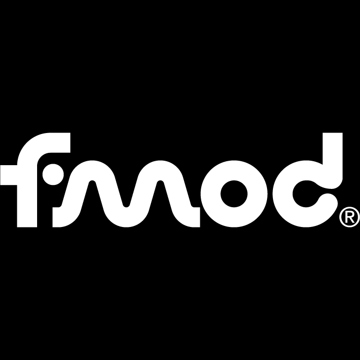
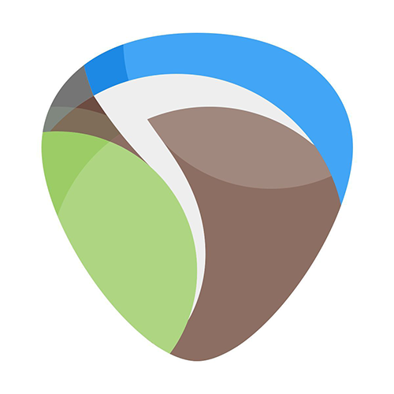
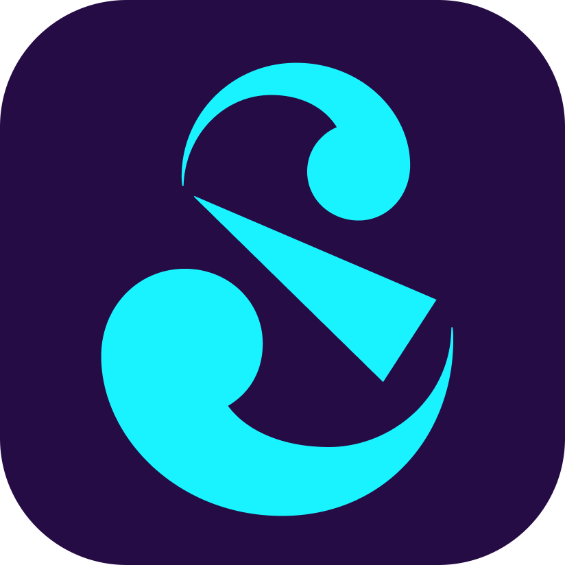
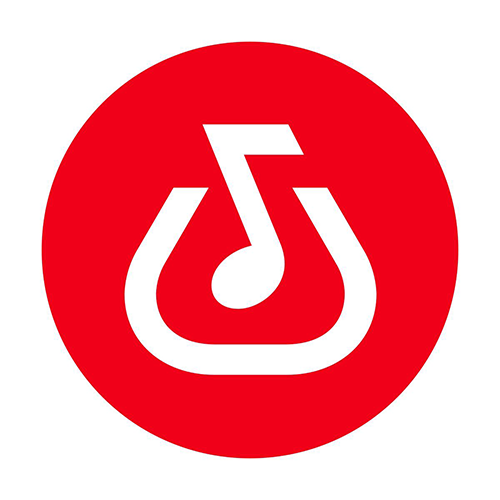

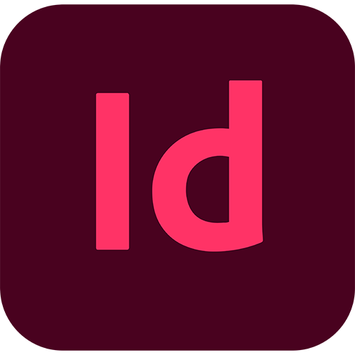

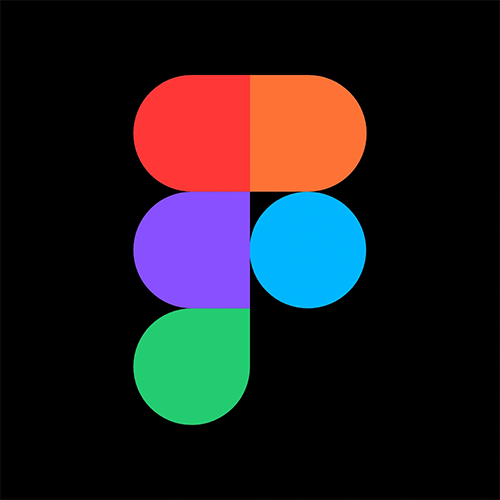
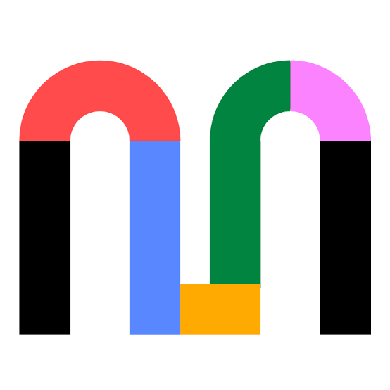
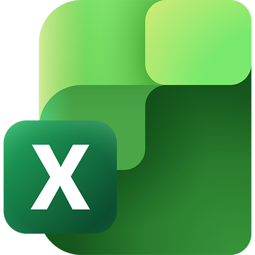


Umiejętności
PORTFOLIO
Doświadczenie
Praktykant – Sound Designer, Animator 2D / Motion Buddies
lip 2025 – sty 2026
Olsztyn
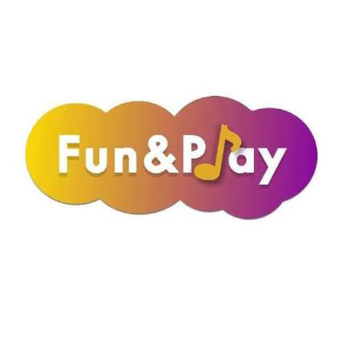
Nauczyciel gitary / Akademia gitary „Fun&Play”
lis 2024 – cze 2025
Poznań
Praktykant – Grafik 2D / Artykuły Przemysłowo-Budowlane
gru 2021 – gru 2021
Bodaczów
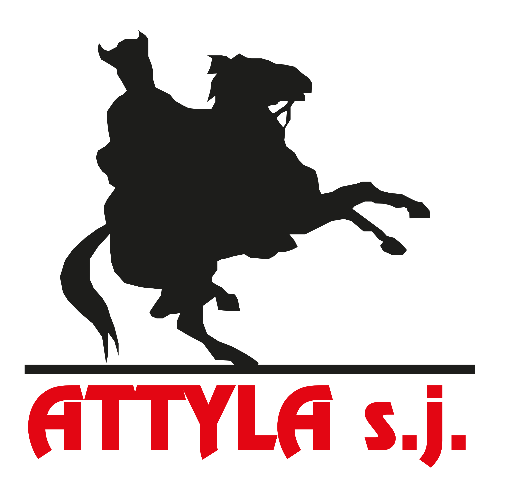
Praktykant – Grafik, Poligraf / Drukarnia Attyla
kwi 2021 – kwi 2021
Zamość
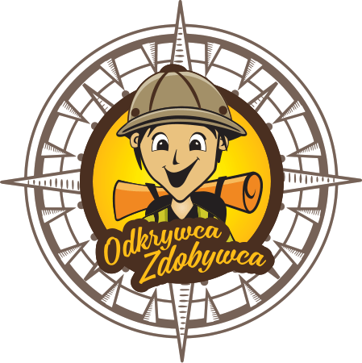
Animator dziecięcy / Odkrywca Zdobywca
paź 2020 – wrz 2024
Zamość
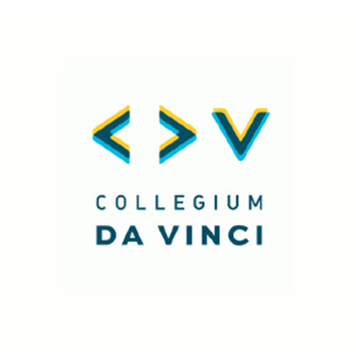
Collegium Da Vinci Poznań
paź 2024 – obecnie
Wyższe — Game Development (licencjat)
Zespół Szkół Ponadpodstawowych nr 1 „Ekonomik” Zamość
wrz 2019 – kwi 2024
Średnie — Technik Grafiki i Poligrafii Cyfrowej
Państwowa Szkoła Muzyczna 1 stopnia im. Karola Szymanowskiego Zamość
wrz 2013 – cze 2016
Muzyczne — Fortepian